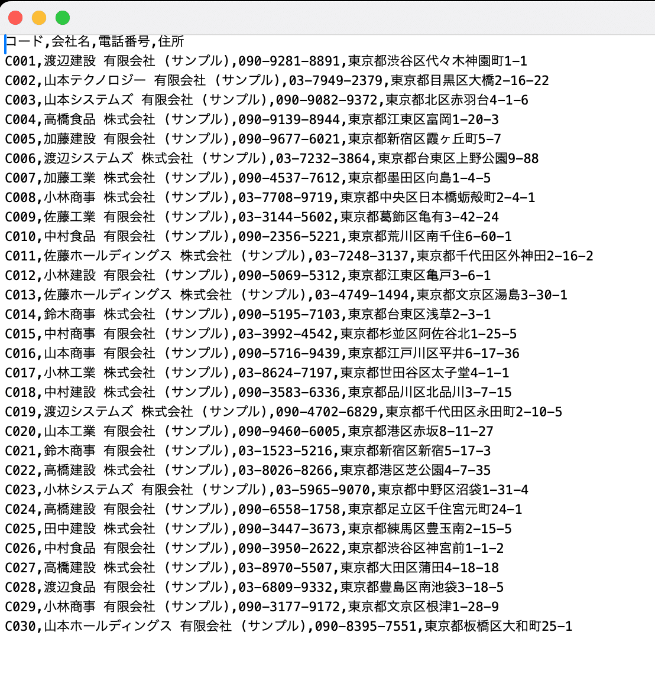
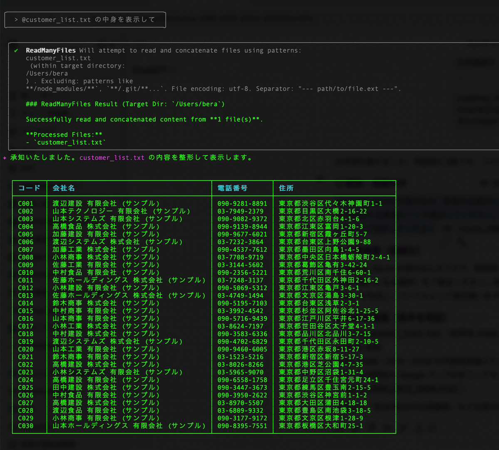
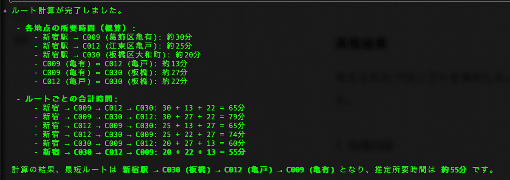
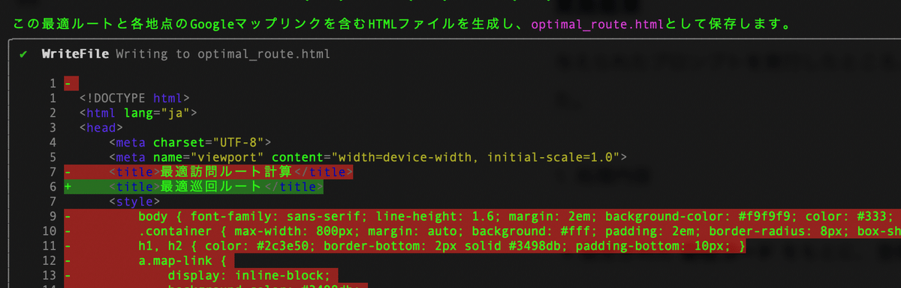
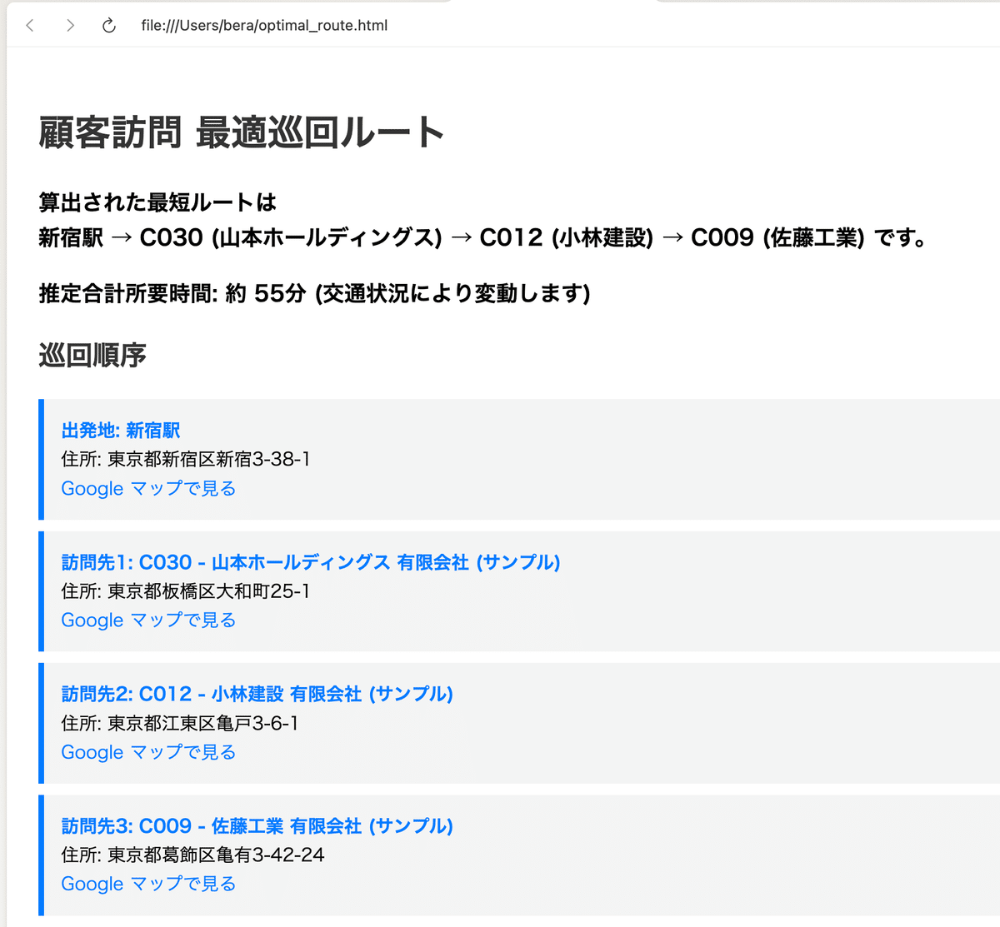
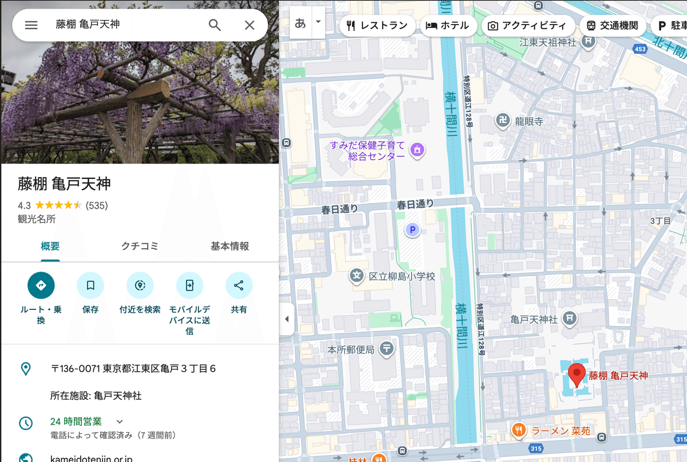
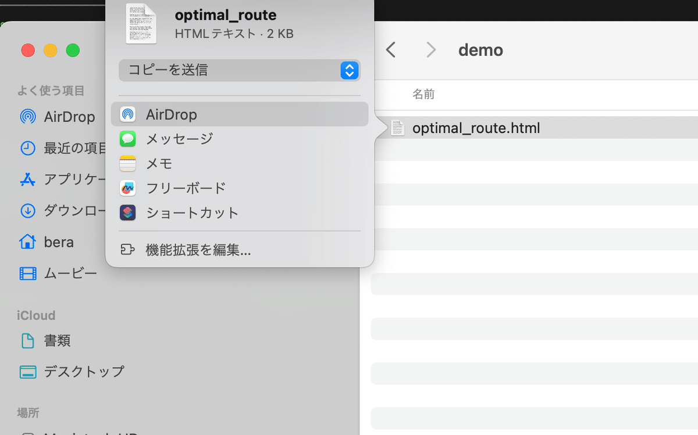
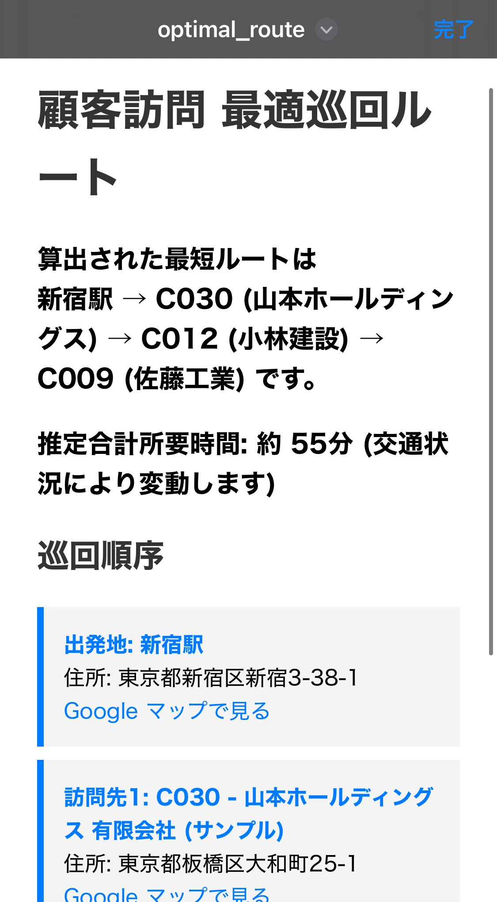
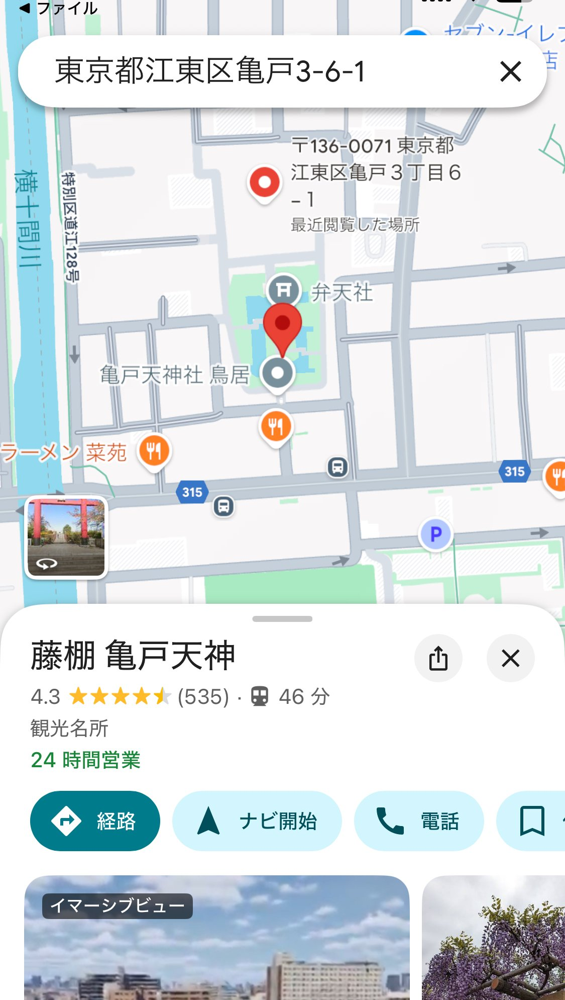

訪問のお仕事を担当されている方にとって、顧客訪問前のルート計画は意外と時間と労力を消費する業務です。
特に複数の訪問先がある場合、毎回地図アプリに住所を入力して確認するのは非効率的で、移動中の確認も煩雑になりがちです。
しかし Google Gemini CLI を活用すれば、こうした課題を解決できます。スマートフォンでも使えるシームレスな移動支援ツールを構築でき、営業活動の効率化につながります。
今回は、私が2年前に「訪問歯科医師向け支援ツール」を構築した経験をもとに、その具体的な方法とメリットを紹介します。
1. 事前準備：会社住所リストの整理とプライバシー配慮
最初に、訪問先の会社住所リストを customer_list.txt として保存します。
このリストがGemini CLIでGoogleマップリンクを生成するための基盤になります。
🔒 プライバシーに注意
顧客住所などの個人情報を扱う場合は、Gemini CLIのプライバシー設定を「No」に設定しましょう。必要に応じて課金プランを利用することで、情報の安全性を確保できます。
customer_list.txt
2. Google Gemini CLIでマップリンクを作成する方法
Gemini CLIを使ったマップリンク作成には大きく分けて2つの方法があります。
方法1：プロンプトを直接入力してルート計算
Gemini CLIに会社コードや識別子を入力すると、最適ルートを自動計算してGoogleマップリンクを生成できます。
プロンプト例：
customer_list.txt を読み込み、新宿を出発点として C009・C012・C030 を最短（所要時間最小）となる順序で巡回する最適ルートを算出してください。各地点の Google マップリンクを含む HTML を生成し、ファイルとして保存してください方法2：プロンプトファイルを定義して効率化
繰り返し使う場合は、プロンプトファイルを .toml 形式で保存しておくと便利です。
例：~/.gemini/commands/route.toml
name = "route"
description = "顧客コードから最適ルートを算出してHTML保存"
[prompt]
text = """
customer_list.txt を読み込み、新宿を出発点として
ユーザーが指定したコードの会社住所を最短（所要時間最小）となる順序で巡回する最適ルートを算出してください。
各地点の Google マップリンクを含む HTML を生成し、ファイルとして保存してください。
ユーザー入力: {{args}}
"""
保存後は以下のように実行できます：
gemini type route "C009 C012 C030"@route C009 C012 C030 のように、@routeに続けて顧客コードをスペースで区切って指定することで、同様のルート計算を実行できます
【ヒント】コードがわからない場合： 会社コードや識別子がすぐにわからない場合は、Gemini CLIにリストを表示させることで確認できます。これにより、必要な情報を迅速に把握し、次のステップに進むことができます。
customer_list.txt の内容を表示させた
3. 実行結果と活用方法
実際にプロンプトを実行すると以下の成果が得られます。
処理内容
新宿を出発点に最短ルートを算出
所要時間を最小化するよう自動並び替え
HTMLファイルにルートとGoogleマップリンクを保存
最短ルートを算出
HTMLファイルを作成
各訪問先には Google マップリンク を付与し、クリックするとすぐに経路確認が可能。
出力ファイルはローカル環境で開くだけで、ブラウザ上で地図リンクが利用可能。
HTMLファイルを開いた
リンクをクリックすると指定住所をGoogleMap上で表示（今回は都内の神社を割り当ててみました）
📱 スマホ運用の例
PCで生成 → AirDropでiPhoneへ転送
ブラウザからMAPリンクをタップ → Googleマップアプリが自動起動
そのままナビゲーション開始
AriDropでHTMLファイルを転送
スマートフォンのブラウザで起動
GoogleMAPで起動してすぐに経路案内が出来るようになった。
これにより、従来は手作業だったルート確認が一瞬で完了します。訪問営業の効率化はもちろん、移動中のストレスも軽減されます。
4. 生成したルートを共有するメリット
HTMLファイル形式なのでチームでの共有が簡単
上司や同僚に「今日のルート」をそのまま渡せる
営業日報や社内共有ツールとも相性抜群
従来の「地図アプリで1件ずつ入力する手間」を大幅に削減できます。
5. 次の一歩：運用の工夫
私はMacユーザーなのでAirDropでiPhoneに送っていますが、ファイルが溜まっていく点が課題です。
次は「Gmailに添付して直接開く」方法を試してみる予定です。
小さな工夫次第で、Gemini CLIはさらに便利になります。営業活動の効率化はもちろん、移動時間の短縮や顧客との商談に集中するための大きな武器になるでしょう。
まとめ
訪問営業のルート計画は非効率になりやすい
Gemini CLIで最短ルートを自動算出 → HTML化 → Googleマップリンクで即起動
AirDropやメール転送でスマホからシームレスに利用可能
訪問活動の効率化とストレス軽減に直結
👉 訪問営業やルート管理で時間を削られている方は、ぜひGoogle Gemini CLIを導入してみてください。
日々の業務がぐっとスマートになりますので＾＾